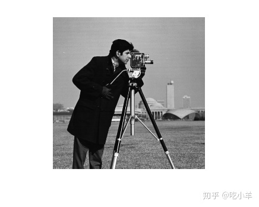
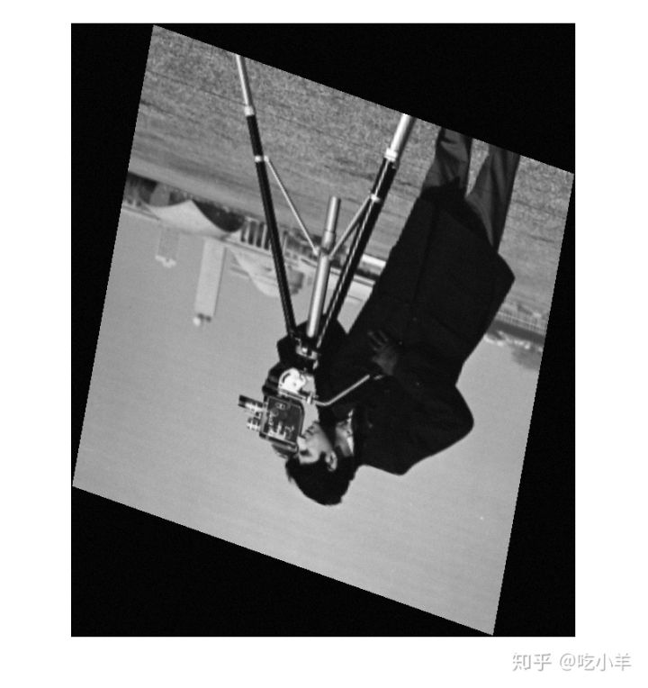
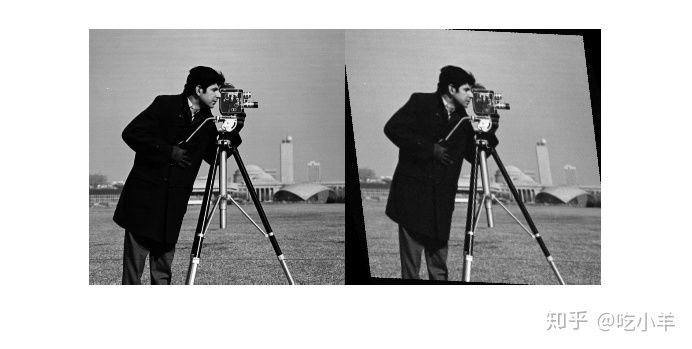
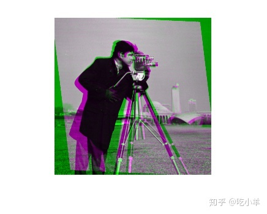
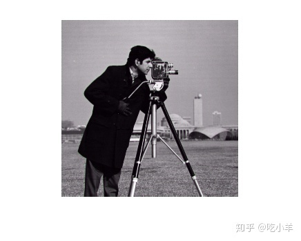

Home
本示例说明如何将相位相关用作自动图像配准的预备步骤。在此过程中，您可以使用imregcorr进行相位相关操作，然后使用imregister，将该配准的结果作为基于优化的配准的初始条件。相位相关和基于优化的配准是互补的算法。相位相关可以很好地发现总体对准，即使对于严重失准的图像也是如此。给定良好的初始条件，基于优化的配准有助于找到精确的对齐方式。
读取图像作为配准中的参考图像。
fixed = imread('cameraman.tif');
imshow(fixed);

通过使用旋转，各向同性缩放和沿y方向的剪切，故意使该图像失真，来创建未配准的图像。
theta = 170;
rot = [cosd(theta) sind(theta) 0;...
sind(theta) cosd(theta) 0;...
0 0 1];
sc = 2.3;
scale = [sc 0 0; 0 sc 0; 0 0 1];
sh = 0.5;
shear = [1 sh 0; 0 1 0; 0 0 1];
tform = affine2d(shear*scale*rot);
moving = imwarp(fixed,tform);
向图像添加噪点，然后显示结果。
moving = moving + uint8(10*rand(size(moving))); imshow(moving)

估计使这两个图像对齐所需的配准。imregcorr返回affine2d对象，定义变换。
tformEstimate = imregcorr(moving,fixed);
将估计的几何变换应用于未对齐的图像。指定'OutputView'以确保配准图像与参考图像尺寸相同。并排显示原始图像和注册图像。您可以看到，imregcorr在处理图像之间的旋转和缩放差异方面做得很好。配准的图像movingReg与原始图像fixed非常接近，但是仍然存在一些偏差。imregcorr可以很好地处理旋转和缩放变形，但不能很好地处理剪切变形。
Rfixed = imref2d(size(fixed)); movingReg = imwarp(moving,tformEstimate,'OutputView',Rfixed); imshowpair(fixed,movingReg,'montage');

使用imshowpair，查看叠加在原始图像上的对齐图像。在此视图中，imshowpair使用颜色突出显示未对齐区域。
imshowpair(fixed,movingReg,'falsecolor');

要完成配准，请使用imregister，并传递imregcorr所返回的估计变换作为初始条件。如果两个图像在操作开始时大致对齐，则imregister效果更好。imregcorr估计的变换可为imregister提供信息。该示例使用默认的优化器和度量标准值来配准两幅图像，使用同一传感器参数（'monomodal'）。
[optimizer, metric] = imregconfig('monomodal');
movingRegistered = imregister(moving, fixed,...
'affine', optimizer, metric,'InitialTransformation',tformEstimate);
显示配准的结果。请注意，由于imregcorr所提供的良好初始条件，imregister已经实现了非常准确的配准。
imshowpair(fixed, movingRegistered,'Scaling','joint');

======================================================================
我的测试结果及程序
下面是我测试的代码：

注：本文根据MATLAB官网内容修改而成。